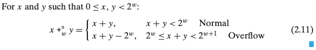
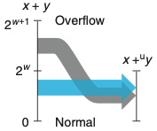
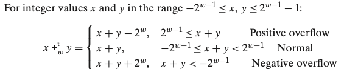
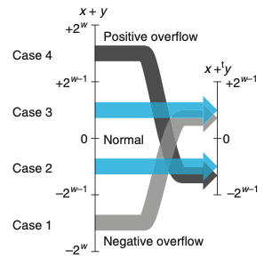
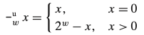
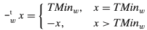
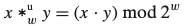
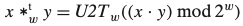

Chapter 02. 정보의 표현과 처리
- 2.1 정보의 저장
- 컴퓨터는 데이터, 인스트럭션등을 어떻게 저장하는지
- 2.2 정수의 표시
- 인코딩, 비부호형 및 2의보수
2.3 정수의 산술연산
- 두 개의 양수를 더해서 음수가 나오는 경우, x<y와 x-y<0이 다른 결과를 보일 때 초보 프로그래머(나포함 ㅋ..)들은 놀라게 된다,
- 그렇다면 컴퓨터 산술연산의 미묘한 느낌을 이해해보자.
2.3.1 비부호형 덧셈
x,y, 0≤x, y≤e^w가 있다고 하자, 두 합의 계산 범위는 0≤x+y≤2^(w+1)-2를 갖는다. 이 합의 크기를 표현 하기 위해서는 w+1개의 비트가 필요하게 된다.
- “워드 크기 증가”는 산술연산의 결과를 완벽하게 표시하려면 필요한 워드 크기를 제한할 수 없다는 것을 의미한다.
- 프로그래밍 언어들은 고정길이 산술연산을 지원하며 따라서 “덧셈”과 “곱셈”같은 연산은 정수에 대응하는 일반적인 연산들과는 다르다.
-
x,y에 대해 x+y 정수합을 w비트 길이로 절삭한 후에 다시 비부호형 정수로 나타낸다.

-
정상적인 경우에는 x+y값을 유지하지만, 오버플로우의 경우에는 2^w만큼 줄어드는 효과를 낸다.

산술연산에서 완전한 정수 결과가 그 데이터 타입의 제한된 워드 길이로 나타낼 수 없을 때 이 연산은 “오버플로우한다”고 한다.
2.3.2 2의 보수의 덧셈
2의 보수 덧셈의 결과값이 너무 크거나(양수) 또는 너무 작아서(음수) 표시할 수 없을 때 우리는 어떻게 해야 할지 결정해야 한다.
-
x+y를 w비트 길이로 절삭한 후에 2의 보수로 결과를 나타내는 연산이다.
 
2의 보수의 합이 2^(w-1)을 넘어간다면 양수 오버플로우가 생기고, -2^(w-1) 미만으로 내려간다면 음수 오버플로우가 생겨 각각에 2^w을 더해주거나 빼준다.
2.3.3 2의 보수에서의 비트반전 Negation
-
비부호형 비트반전

-
2의보수 비트반전

2.3.4 비부호형 곱셈
- 비부호형 곱셉은 2w비트 정수 곱의 하위 w비트로 주어지는 w비트 값을 만드는 것으로 정의된다.
-
비부호형 수를 w비트로 절삭하는 것은 해당 값을 2^w로 나눈 나머지를 계싼하는 것과 같다.

2.3.5 2의 보수 곱셈
-
2^w로 나눈 나머지를 취하고 비부호형에서 2의 보수형태로 변환하는 것과 같다.

2.3.6 상수를 사용한 곱셈
- 정수 곱셉은 매우 느리다. 컴파일러에서 수행되는 중요한 최적화는 상수를 곱하게 되는 경우들을 쉬프트와 덧셈의 조합으로 대체한다.
- 2의 제곱을 곱하는 경우
- k≥0인 모든 k에 대해 x2^k의 w+k 비트수준 표현은 우측에 k개의 0을 추가한 것이다.
- eg) 11은 w=4인 경우 [1011]이다. 이것을 왼쪽으로 k=2 쉬프트 하면 [101100]이 되며 이것은 11*4=44를 인코딩한 것이다.
- 2의 제곱을 곱하면 비부형이건 2의 보수 산술연산이건 오버플로우가 발생할 수 있다.
- eg) 위의 예제를 예로 들자면, [101100]을 4비트로 절삭하면 1100을 얻는다.
정수 곱셈이 쉬프트와 덧셈을 사용하는 것보다 훨씬 비용이 많이 드는 연산이기 때문에 C 컴파일러들은 정수가 상수와 곱해지는 경우에 이들을 쉬프트, 덧셈, 뺄셈 등의 조합을 사용해서 제거하려고 노력한다.
2.3.7 2의 제곱으로 나눗셈하기
- 정수 나눗셈은 정수 곱셉보다 훨씬 느리다. 2의 제곱으로 나누는 것은 오른쪽 쉬프트를 사용한다.
- 비부호형은 논리 쉬프트, 2의 보수는 산술 쉬프트를 사용한다.
- 2의 보수 음수에서는 보정값을 더해서 결과값을 0 방향으로 근사하도록 한다.
2.3.8 정수 산술연산에 대한 마지막 고찰
컴퓨터에서 실행되는 “정수” 산술연산은 실제로는 modular 산술연산의 형태로 수행된다. 숫자를 표현하기 위해 유한한 길이의 워드를 사용하기 때문에 가능한 값의 범위가 제한되며 연산의 결과가 오버플로우될 수 있다.